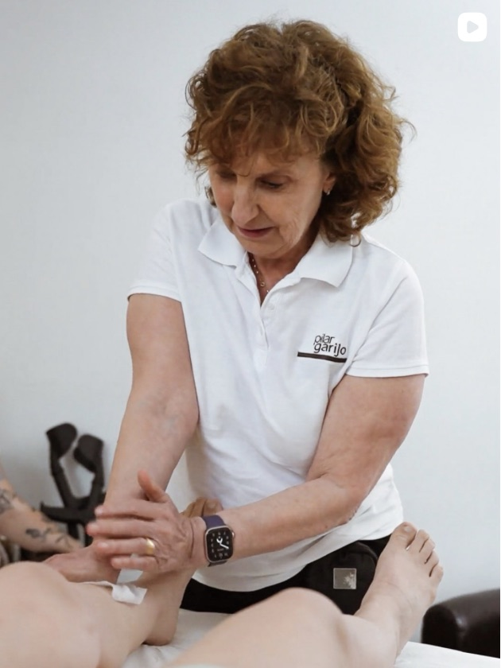

Terapia manual pura
Sin aparatología ni atajos: manos, anatomía y criterio. El método trabaja la causa, no solo el síntoma, con técnicas refinadas consulta a consulta desde 1994.
Formación para profesionales del masaje
Más de treinta años de terapia manual condensados en una formación pensada exclusivamente para masajistas y quiromasajistas en activo. Aprende el método directamente de su creadora.

Esta formación no es de iniciación. Está dirigida a masajistas y quiromasajistas que ya ejercen y quieren incorporar el Método Garijo a su consulta: protocolos reales, criterio clínico y técnica depurada durante más de tres décadas.
El Método Garijo
Desde 1994, en los Centros de Quiromasaje Pilar Garijo ofrecemos soluciones de la mejor calidad basadas en terapias manuales, con un método propio de probado éxito.
Sin aparatología ni atajos: manos, anatomía y criterio. El método trabaja la causa, no solo el síntoma, con técnicas refinadas consulta a consulta desde 1994.
Cada técnica del método ha pasado por miles de camillas antes de llegar a la academia. Te llevas protocolos completos, listos para aplicar con tus propios clientes desde el primer día.
El método lo enseña quien lo creó. Pilar transmite no solo la técnica, sino el ojo clínico y los matices que no caben en un manual.

Quién enseña
Fundadora de los Centros de Quiromasaje Pilar Garijo, Pilar lleva desde 1994 dedicada en exclusiva a la terapia manual. En estos años ha tratado con éxito a más de veinticinco mil personas y ha convertido su experiencia en un método propio.
Ahora, por primera vez, abre ese método a otros profesionales: la academia nace para que masajistas y quiromasajistas puedan formarse directamente con ella.
— Pilar Garijo
La formación
La formación completa en el masaje del método: la base sobre la que se construye todo el trabajo de los centros Pilar Garijo.
El segundo nivel del método, editado por fascículos para que avances bloque a bloque, a tu ritmo.
Regístrate para saber más
Déjanos tus datos y te avisaremos antes que a nadie de la apertura de inscripciones, las plazas y cada nuevo fascículo.
Te avisaremos antes que a nadie cuando abramos la inscripción de septiembre.
Dudas frecuentes
No. La academia está pensada exclusivamente para masajistas y quiromasajistas en activo. Los contenidos dan por hecho que ya dominas la base de la profesión.
En septiembre de 2026. Las plazas se anunciarán primero a las personas registradas en la lista — déjanos tus datos y te avisaremos antes que a nadie.
El Curso de Colocación y Manipulación se publicará por bloques a partir de noviembre de 2026: Bloque 1, Bloque 2 y Bloque 3. Iremos anunciando el contenido y las fechas de cada uno.
Pilar Garijo, creadora del método y fundadora de los Centros de Quiromasaje Pilar Garijo, en activo desde 1994.